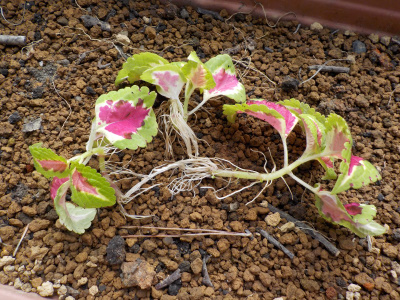
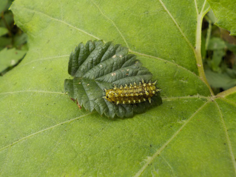
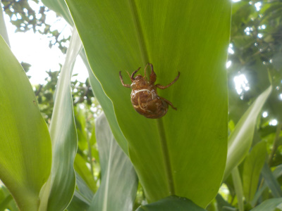
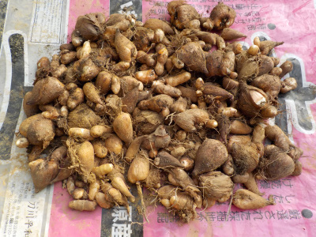
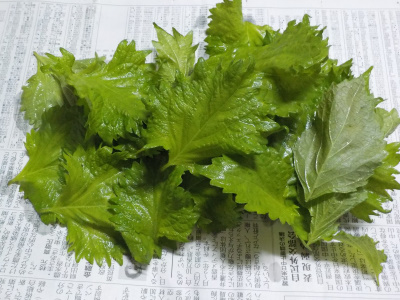

コリウスの水挿しに根っこが出ました。
2020/07/26

水につけっぱなしで気づいた時には根っこが沢山出ていました。
コリウスは簡単に増やせていいですね。
7月末に植えたら枯れるまでにどれだけ大きく育つかな？
2020/07/26

水につけっぱなしで気づいた時には根っこが沢山出ていました。
コリウスは簡単に増やせていいですね。
7月末に植えたら枯れるまでにどれだけ大きく育つかな？
2020/07/26

注意が足りなくて毛虫に手が当ってしまった。
手袋をしていましたが痛かったです。
腫れがひどくならないといいな。
2020/07/18

セミの声は聴くんですが、姿は見ていません。
殻だけ見ることが出来ました。
今年はコロナでつまらない夏になりそう。
2020/07/18

去年より倍増しました。
プランターで育てたら株が大きくそだったので、球根が増えたんでしょう。
でも沢山あっても植える場所がないです。
今年からは良く育つプランターはやめて、地植えと小さな鉢植えにしようと思います。
2020/07/12

大葉が虫に沢山食べられていました。
虫に食べられるんなら、自分もドンドン食べてしまおうと思い摘みました。
今日はキュウリの浅漬けに使おうと思っています。
過去の日記
熱中症に注意しましょう。